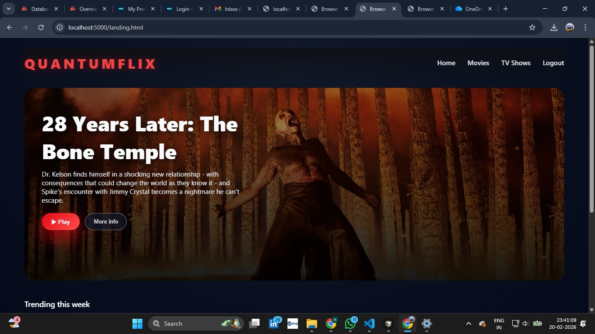
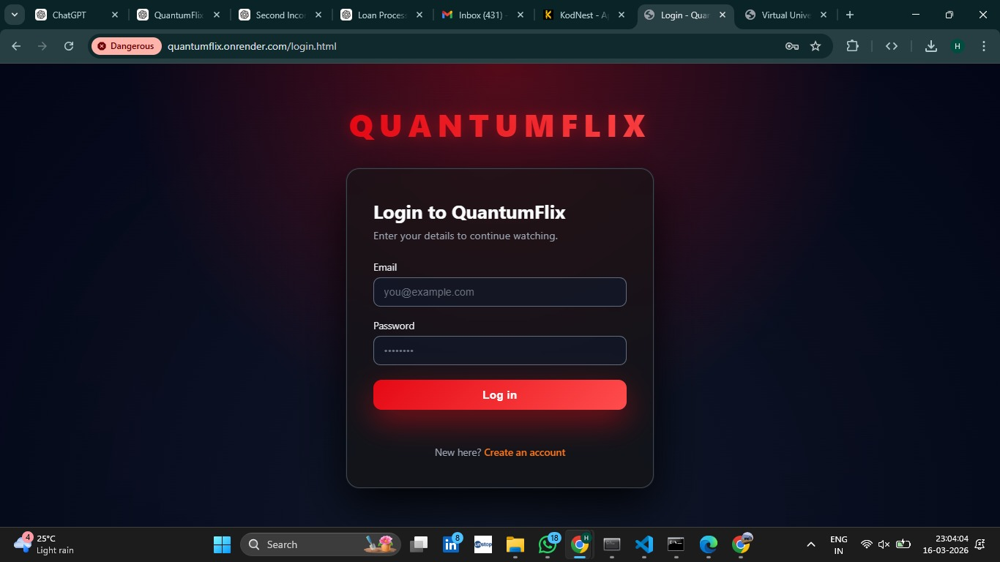
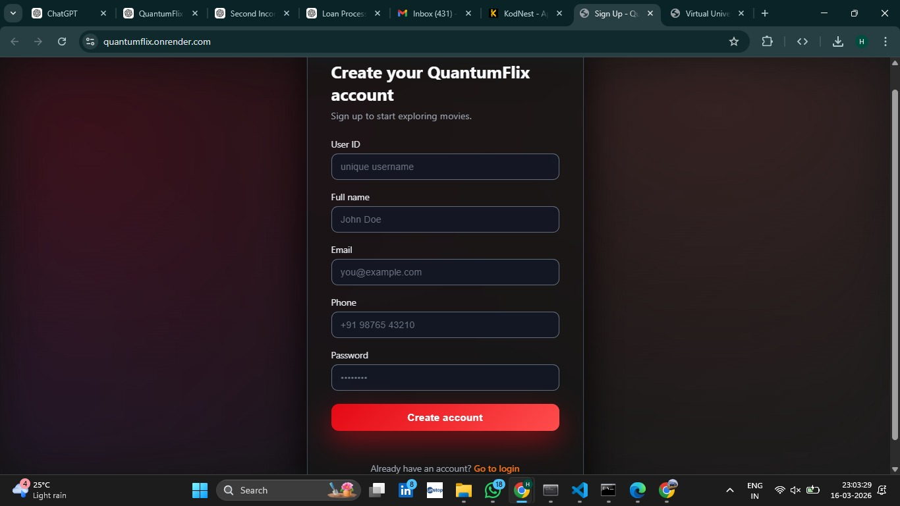
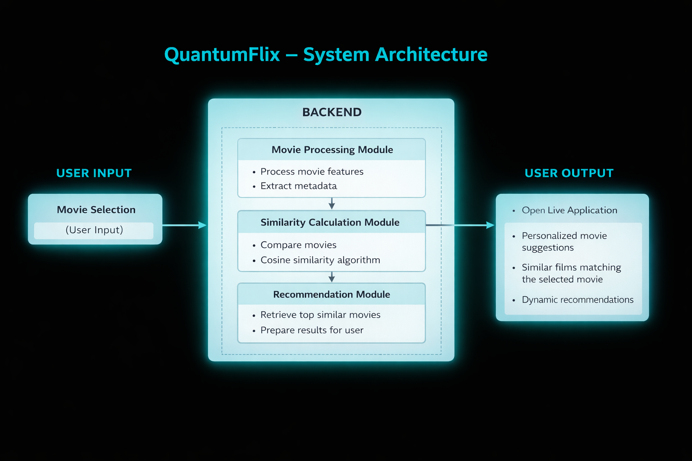

Machine Learning Based Movie Recommendation Web Application
Source CodeQuantumFlix is an AI-powered movie recommendation platform designed to suggest movies based on user preferences using machine learning similarity algorithms.
The system analyzes movie metadata such as genres, ratings and descriptions to recommend movies similar to the user's selected movie.
View Project READMEThe complete source code of the QuantumFlix project including backend, frontend and machine learning components is available on GitHub.
Open RepositoryStreaming platforms contain thousands of movies, making it difficult for users to discover movies matching their interests.
QuantumFlix solves this problem by recommending movies using machine learning similarity algorithms that analyze movie features and user selections.




The QuantumFlix system successfully generates personalized movie recommendations based on similarity between movies and user selections.
The platform provides an interactive web interface where users can browse movies, log into the system, and receive relevant movie suggestions instantly.
This demonstrates how machine learning similarity algorithms can be integrated with modern web technologies to build scalable recommendation systems for streaming platforms.